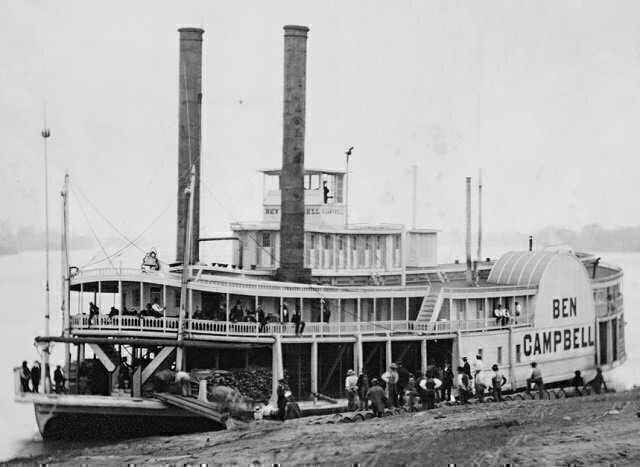
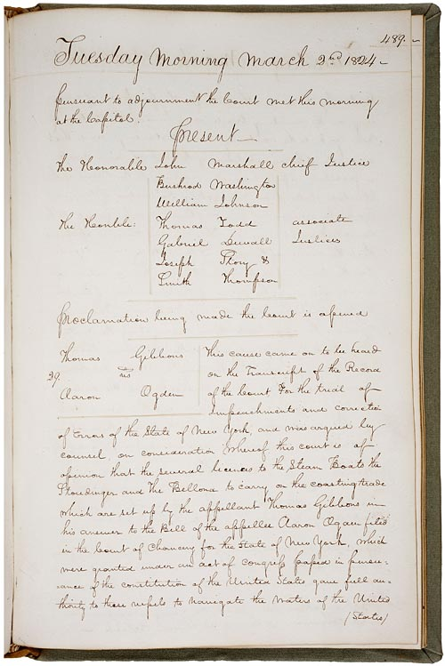

| Gibbons v. Ogden (1824) Supreme Court of the United States |
| Home | Sources | Quiz |
Gibbons v. Ogden (1824) was a Supreme Court decision that greatly shaped American legal history. The ruling decided that states should be prohibited from enacting legislation that interfered with Congress’s authority to regulate commerce among the separate states. Chief Justice John Marshall gave the opinion of the court and stated that Congress had the power to regulate commerce, asserting the superiority of federal law over state laws. The Supreme Court case originated from a dispute over a New York law granting a steamboat monopoly to Robert Fulton and Robert Livingston, which went against Aaron Ogden’s license to navigate interstate waters. Gibbons v. Ogden set into motion the federal government's authority over economic matters, the expansion of federal power, and set the stage for increased legislative oversight of the nation’s economic activities.
In 1807, Robert Fulton had invented a groundbreaking steamboat which revolutionized transportation and commerce. However, the State of New York created tensions by granting Robert Fulton and Robert Livingston an exclusive monopoly over steamboat navigation in its waters, which suppressed competition and innovation among competitors. This monopoly led to a clash of interests between Aargon Ogden who was licensed by New York and Thomas Gibbons who was given permission by the federal government. The case emerged because there were debates and uncertainty over the congressional power to regulate interstate commerce, with states trying to assert their authority over federal interests. This created the need for legal clarity in a rapidly changing country that focussed on innovation and efficiency. Gibbons v. Ogden laid the groundwork for generations to come by cementing Congress’s authority over interstate commerce and reshaped the regulatory framework.
The case explores whether states can regulate commerce while Congress also exercises regulation. Arguments revolve around the extent of federal power and its relationship with state authority. The appellant asserts that full power to regulate implies exclusive control, while the respondent argues that states may regulate under limits that aren’t expressly prohibited by Congress. The court acknowledges the complexity of the issue but is ultimately in favor of federal supremacy, stating that any state law conflicting with a federal law must yield. This also applies to any law, regardless of whether it’s related to interstate commerce or domestic affairs. This decision aligns with the Constitution’s supremacy clause which promotes federal laws and treaties above state laws when in conflict. The court's opinion emphasizes the intent of the founders to ensure federal supremacy, as well as maintain a balance of powers between the federal and state governments.
On March 2, 1824, Mr. Chief Justice Marshall delivered the opinion of the Court in Gibbons v. Ogden, stating that the laws granting an exclusive privilege to operate steamboats were unconstitutional. Marshall emphasized the Constitution’s grant of power to Congress to regulate commerce and promote science and useful arts. Marshall rejected the appellant’s arguments and asserted that the Constitution’s list of powers did not warrant a strict construction and emphasized the necessity of interpreting the Constitution in line with its intended purposes. He argued against narrow constructions that would limit governmental powers essential for fulfilling the Constitution’s objectives. Marshall stressed the importance of considering the Constitution’s language along with its stated objectives to determine the extent of governmental powers. This decision reaffirmed Congress’s authority over interstate commerce and established a precedent with widespread implications for federal power and the regulation of commerce in the United States.
Gibbons v. Ogden left a long lasting impact on American federalism, reshaping the balance of power between the federal government and the states. Chief Justice John Marshall’s interpretation of the Commerce Clause established federal supremacy in matters of interstate commerce regulation. This landmark decision significantly expanded federal authority and created a shift towards a stronger central government. Marshall’s ruling not only voided New York’s steamboat monopoly but also set the stage for broader federal intervention into economic affairs.